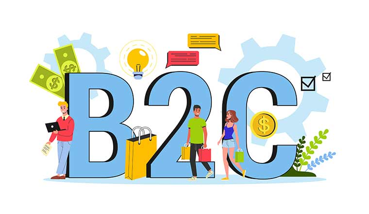

STREAMLINING MULTI-INDUSTRY PRODUCTS: A B2C APPROACH TO PRODUCT MANAGEMENT

IN THE BEGINNING:
Having started out my Product Management journey in this establishment. I definitely learnt a lot from Sageplexx as a whole and the Senior Product Manager I was under.As a growing Product Manager at Sageplexx Technologies, I contributed to the development of large scale products some of which are Lagos Ride v1 in sync with the product development team at Zeno, Metricks v1, Lagos Grant Admin and Super Admin portals and many more, these products cut across an array of industries from affiliate marketing to ride hailing etc. I was placed on strategic research in enhancing client products above that of competitors in building better, stronger and more efficient product outcomes. It was here that I was promoted from Product Manager Associate/Intern to a full fledged Product Manager.
MY CONTRIBUTIONS:
- Used my knowledge of design thinking approaches to ensure product designers delivered great user experiences on client products.
- Conducted strategic research around client industry trends and competitor weakness and created strategy documents on ways the product and marketing could always stay ahead.
- Ideated on the second version of Metricks, documented requirements and features expected to strategically position the company along its plans for expansion.
- Worked closely with quality assurance in ensuring vital bugs reported where prioritized by the development and Senior product manager.
- Introduced the team to stronger process tools that got the team performing 2x better and made it easier for QA to efficiently report bugs and have them quickly attended to.
RESULTS:
- Launched Metricks v1 in 6 months - a large scale affiliate marketing platform
- Ensured the quick launch of Lagos Ride v1 and managed the Senior product manager's schedule alongside a very difficult development team
- Various client teams were able to execute better with set down processes to aid with great PM to Team relationships.


Built with  by Omolola Odunowo
by Omolola Odunowo